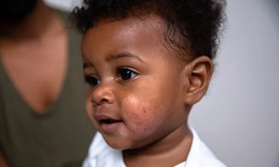
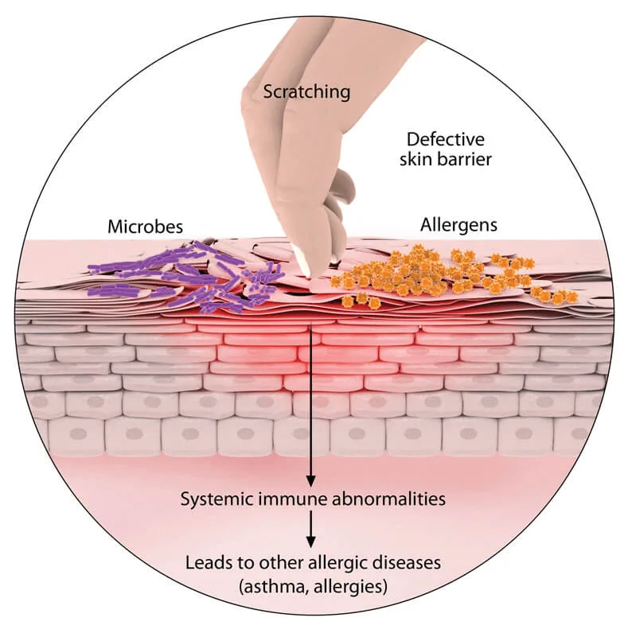
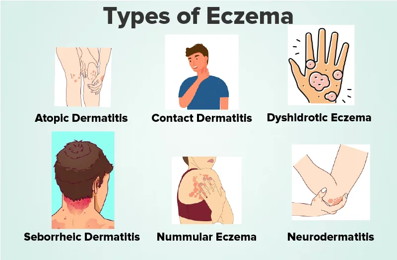
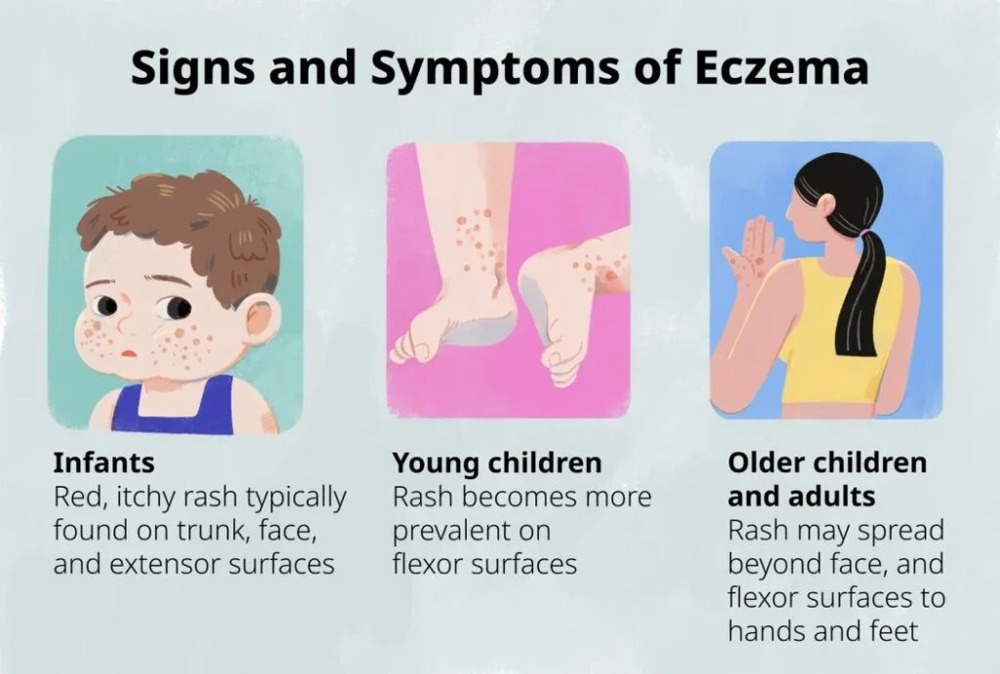
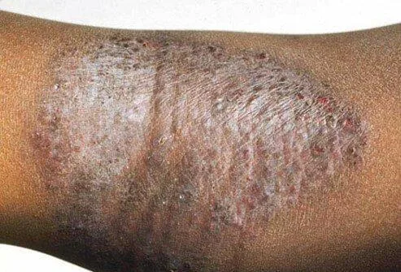
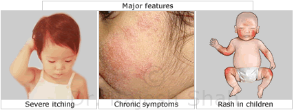
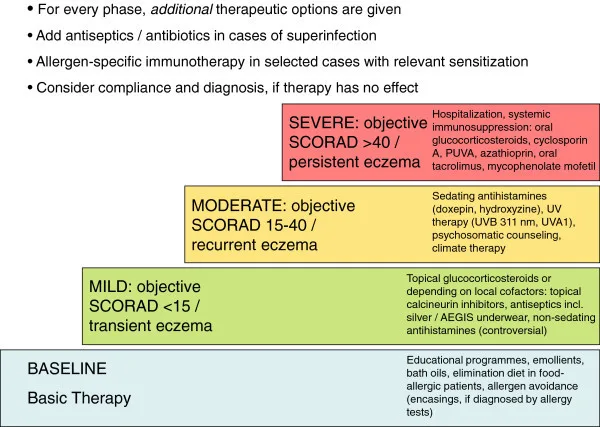

Expanded Nursing Uganda Explanation
Eczema should be understood beyond a short definition. Link the concept to patient history, focused assessment, common risks, nursing priorities, documentation and evaluation of outcomes.
01 ECZEMA
Eczema , also known as atopic dermatitis , or atopic eczema , is a dermatologic problem where patches of skin become inflamed, itchy, red, cracked, and rough. Blisters may sometimes occur.
It is commonly seen in children . It is a relapsing skin problem that is manifested as pruritus , accompanied with swelling , redness , and dryness of the skin. Flaking , cracking , oozing , blistering or bleeding may occur as a result of excessive scratching of the skin .
Several factors are linked with this disease such as genetic mutation, and family history. Eczema cannot be cured, but it is not contagious. This is usually associated with allergy.
Causes of Eczema
The specific cause of eczema remains unknown , but it is believed to develop due to a combination of genetic and environmental factors.
Genetic Factors:
- Family History : Children with relatives affected by eczema or other atopic diseases, such as asthma or hay fever, have a higher likelihood of developing the condition.
- Inherited Gene Mutations : Genetic mutations can disrupt the skin’s natural barrier function, increasing vulnerability to irritants and allergens.
Environmental Factors:
- Irritants : Exposure to harsh soaps, detergents, shampoos, disinfectants, and even juices from fresh fruits, meats, or vegetables can trigger eczema. Certain fabrics like wool or synthetic materials may also contribute to irritation.
- Allergens : Eczema can be aggravated by exposure to common allergens, including dust mites, pet dander, pollen, mold, and dandruff.
- Microbes : Presence of microbes like bacteria (e.g., Staphylococcus aureus), viruses, and fungi can play a role in eczema development.
- Environmental Conditions : Extreme temperatures, whether hot or cold, and fluctuations in humidity levels can impact eczema.
Dietary Factors:
- Common Food Triggers : Consumption of certain foods, including dairy products, eggs, nuts, seeds, soy products, and wheat, can be associated with eczema development.
Other Factors:
- Stress : Psychological stress can exacerbate eczema symptoms.
- Hormonal Changes : Hormonal fluctuations, such as those occurring during pregnancy or the menstrual cycle, may influence the severity of eczema symptoms.
- Age : Eczema is more common in children and infants, although it can affect individuals of all ages.
- Skin Dryness : Dry skin can worsen eczema symptoms, emphasizing the importance of maintaining proper skin hydration.
02 C lassification of Eczema
The National Eczema Association has categorized eczema into various types.
Table 1. More Common Types of Eczema.
- Classification Description
- Atopic eczema Presented as xerosis and pruritus.
- Contact dermatitis Skin lesions attributed to any allergens or irritants.
- Seborrhoeic dermatitis Papulosquamous dermatologic disease with greasy scales on the scalp
Table 2. Lesser Common Types of Eczema.
- Classification Description
- Dyshidrosis (Dyshidrotic Eczema/ Housewife’s Eczema) Presents as pruritic vesicles with thickening and cracks on palms, soles, and lateral borders of fingers and toes.
- Nummular Dermatitis (Discoid Eczema) Well-demarcated round, oozing lesions mainly on lower extremities with an unknown etiology.
- Stasis Dermatitis (Varicose eczema/Venous eczema) Commonly found in ankles of individuals aged 50 and above with blood circulation problems; may lead to leg ulcers.
- Dermatitis herpetiformis Often associated with celiac disease, featuring a symmetrical, pruritic rash on arms, knees, back, and thigh.
- Neurodermatitis(Lichen Simplex Chronicus) Thickened, hyperpigmented, pruritic patch.
- Autoeczematization (Autosensitization) Skin reaction to microorganisms, manifesting at a distance from the original site of infection.
****
03 Symptoms of atopic eczema vary across different age groups:
Infants (Under 2 Years Old):
- Rashes commonly appear on the scalp and cheeks.
- Rashes typically bubble up before leaking fluid.
- Extreme itchiness may interfere with sleep, and continuous rubbing can lead to skin infections.
Children (2 Years Until Puberty):
- Rashes commonly appear behind the creases of elbows or knees, as well as on the neck, wrists, ankles, and buttock- leg creases.
- Over time, rashes can become bumpy, change in color, thicken ( lichenification ), develop knots, and lead to permanent itching.
Adults:
- Rashes commonly appear in creases
- of the elbows or knees, the nape of the neck, and cover much of the body.
- Prominent rashes on the neck, face, and around the eyes may occur.
- Skin can become very dry, and rashes can be perma
- nently itchy.
- Rashes in adults may be more scaly than those in children.
- Skin infections can result from scratching.
- Adults who had atopic dermatitis as children may still experience dry or easily-irritated skin, hand eczema, and eye problems, even if the condition has resolved.
04 Diagnosis of Eczema.
Assessment :
- Eczema is a skin condition and the main characteristic of this disease is itching.
- Acute refers to the initial stage, where the skin may have crusted, oozing, eroded vesicles (small blisters), erythematous plaques (red, raised areas of skin), or papules (small, raised bumps).
- Subacute is the stage that comes after the acute stage, where the skin may have erythematous scaly plaques (red, flaky areas of skin) or papules.
- Chronic is the stage that comes after the subacute stage, where the skin may have slightly pigmented (discolored), lichenified (thickened and hardened) plaques or excoriations (areas where the skin has been scraped or scratched).
Skin Allergy Test:
- Conducting a skin allergy test helps identify specific allergens that may be contributing to eczema flare-ups.
- Skin Prick Testing : Involves introducing small amounts of allergens into the skin to identify specific triggers.
- Patch Testing : Identifies delayed hypersensitivity reactions by applying small amounts of potential allergens to the skin and observing reactions over time.
- Food Allergy Testing: Helps identify food triggers contributing to eczema symptoms.
Skin Biopsy:
- In some cases, a skin biopsy may be recommended, involving the collection of a small skin sample for laboratory examination. This procedure helps in confirming the diagnosis and ruling out other skin disorders.
Blood Tests – IgE Level:
- An elevated IgE level can be associated with eczema and may be measured through blood tests.
05 Treatment and Management of Eczema
There is no cure for eczema . Treatment for the condition aims to heal the affected skin and prevent flare-ups of symptoms.
Treatment based on an individual’s age, symptoms , and current state of health.
For some people, eczema goes away over time. For others, it remains a lifelong condition.
Home Care
- Lukewarm baths : Avoid hot water, which can dry out the skin.
- Moisturizing : Apply moisturizer within 3 minutes of bathing to “lock in” moisture. Moisturize daily, especially after bathing.
- Clothing : Wear loose-fitting, soft fabrics like cotton. Avoid rough, scratchy fibers and tight clothing.
- Cleansing : Use a mild soap or non-soap cleanser when washing.
- Drying : Air dry or gently pat skin dry with a towel. Avoid rubbing.
- Temperature control : Avoid rapid temperature changes and activities that cause sweating.
- Trigger avoidance : Identify and avoid individual eczema triggers.
- Humidifiers : Use a humidifier in dry or cold weather.
- Nail care : Keep fingernails short to prevent scratching.
Medications
- Topical corticosteroids : Anti-inflammatory creams or ointments applied directly to the skin to reduce inflammation and itching.
- Systemic corticosteroids : Injected or oral corticosteroids for severe cases. Used for short periods only.
- Antibiotics : Prescribed if eczema is accompanied by a bacterial skin infection.
- Antiviral and antifungal medications : Treat fungal and viral infections.
- Antihistamines : Reduce nighttime scratching by causing drowsiness.
- Topical calcineurin inhibitors : Suppress immune system activity, reducing inflammation and preventing flare-ups.Calcineurin works by suppressing the activity of the immune system, specifically by inhibiting the production of certain inflammatory chemicals called cytokines.
- Barrier repair moisturizers : Reduce water loss and repair the skin’s barrier.
Other Therapies
- Phototherapy : Exposure to ultraviolet light to treat moderate eczema. Skin is monitored closely.
Ongoing Care
- Even after skin has healed, it is important to continue caring for it to prevent irritation. Regular moisturizing and trigger avoidance are helpful for long term care.
06 Nursing Uganda Clinical Lens
Use Eczema as a practical nursing topic, not only a memorized definition. Adapt assessment and care to age, weight, development, caregiver knowledge and family support.
- What to understand first: define eczema, identify the normal or expected pattern, then explain what changes when the patient is unwell.
- Why it matters in care: the nurse must recognize risk early, explain findings clearly, document accurately and know when to escalate.
- How to revise it: connect each point to assessment, nursing diagnosis or care problem, intervention, rationale and evaluation.
07 Assessment Guide
- Airway, breathing, circulation, hydration, temperature, feeding, activity and danger signs.
- Weight-based medicines, immunization status, growth, development and caregiver concerns.
- Signs that may be subtle in children, including lethargy, poor feeding, fast breathing or convulsions.
08 Nursing Priorities, Rationales and Outcomes
- Use age-appropriate communication and involve the caregiver.
- Prevent dehydration, hypothermia, medication errors and delayed referral.
- Teach home care, danger signs and follow-up clearly.
The rationale for these priorities is patient safety: nursing actions should prevent deterioration, reduce discomfort, support recovery and create clear evidence for the next caregiver.
- Expected outcome: The child is clinically improving, caregiver instructions are understood and follow-up is arranged.
09 Patient Teaching and Revision Check
- Explain eczema in simple language the patient or caregiver can repeat back.
- Teach warning signs, medicine or follow-up instructions, hygiene or lifestyle points where relevant.
- For exams, prepare a short answer using: definition, causes or risk factors, signs, assessment, management, complications and prevention.
- For ward practice, document baseline findings, actions taken, patient response and the plan for review.
Illustrations and Diagrams (8)








Related Video Lectures
Watch nursing lecture videos on YouTube for this topic. Opens in a new tab.
Watch on YouTubeExternal link: YouTube may use its own cookies and terms. Nursing Uganda is not affiliated with YouTube.